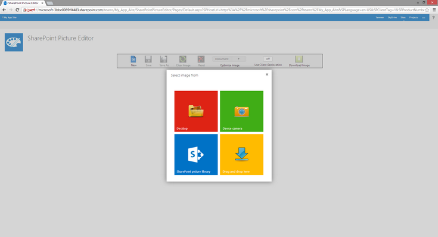
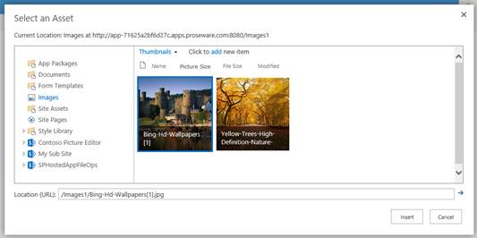
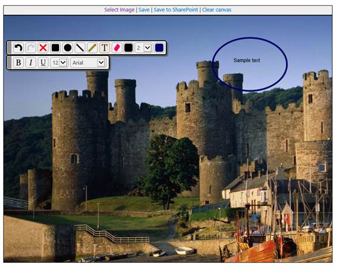

This sample picture editor app enables you to select an image and perform basic image editing operations without using a standalone image editor.
-
You can select an image from the parent site's picture libraries, capture from the device's webcam, or browse or drag an image file from the file system. The image can be saved to a picture library in the parent site, or can be downloaded locally.
-
This app uses the new HTML5 capabilities for the Canvas to enable image editing operations such as drawing objects, changing the color palette, and adding image effects. HTML5 also supports client-side image renditions such as scaling and touch-enabled devices.
-
The app attempts to read geolocation data from the image binary's Exchangeable image file format (Exif) record. If the host SharePoint library has a geolocation field, the data is saved there.
-
The app also adds two custom actions and places them on the Edit Control Block (ECB) and in the Files tab in the ribbon on the parent site's Picture libraries. These custom actions will start the app for the selected picture.
Prerequisites
This sample app requires the following:
-
Microsoft Visual Studio 2012
-
Microsoft Office Developer Tools for Visual Studio 2012
-
SharePoint Server 2013
-
A team or publishing site with a Picture library (not a Document library). Optionally, the picture library should contain a geolocation field.
-
An HTML5-compliant browser, such as Internet Explorer 10 (or later), Google Chrome, or FireFox.
Key components
The sample app contains the following key components:
-
The Default.aspx webpage, which is used to open, edit, and save images.
-
The scripts folder, which contains several scripts that can be reused for other apps for SharePoint.
-
SPPictureEditor_CanvasEditor.js leverages the Websanova Paint jQuery plug-in, extended with additional tools.
-
SPPictureEditor_AssetPicker.js , SPPictureEditor_FileBrowser.js, SPPictureEditor_DragDrop.js, and SPPictureEditor_Cam.js provide the data sources from SharePoint, the browser, the file system, or the camera.
-
SPPictureEditor_SPDataLibrary.js loads and saves an image in a SharePoint site and attempts to add the geolocation data.
-
Build the sample
Follow these steps to build the sample.
-
Press Ctrl+Shift+B to build the solution.
-
Press F5 to run the app.
-
If you are prompted by the browser, sign in to your SharePoint Server 2013 or Office 365 Enterprise site.
Run and test the sample
-
Select one of the displayed image sources.
Note Some HTML5 Web browsers do not support capturing Webcam devices, so the Device camera option will be disabled if you are using such as browser (for example Internet Explorer 10), or you may be notified that the feature is not supported (for example Firefox).
Figure 1. Start screen
 -
For example, using the SharePoint asset picker, you can browse and select an image file from any of the Picture libraries on the host site.
Figure 2. Select an image file
 -
Use the HTML5 canvas editor to draw objects and lines, add text, and choose colors.
Figure 3. Canvas editor
 -
Save the edited image back to the source library or another picture library.
Figure 4. Edited image saved

-
The app installs some custom actions on the host site's Picture libraries for quick image selection. For example, notice the new action on the Edit Control block:
Figure 5. Custom action in the Edit Control Block

Note also the change on the Ribbon:
Figure 6. Custom action in the Picture library ribbon

Troubleshooting
Verify that you have access to a SharePoint site.
Change log
|
Version |
Date |
|---|---|
|
First version |
January 2014 |